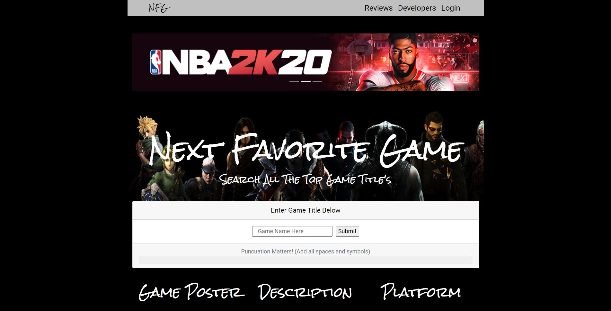
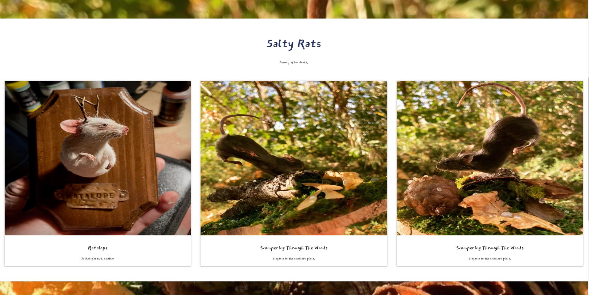
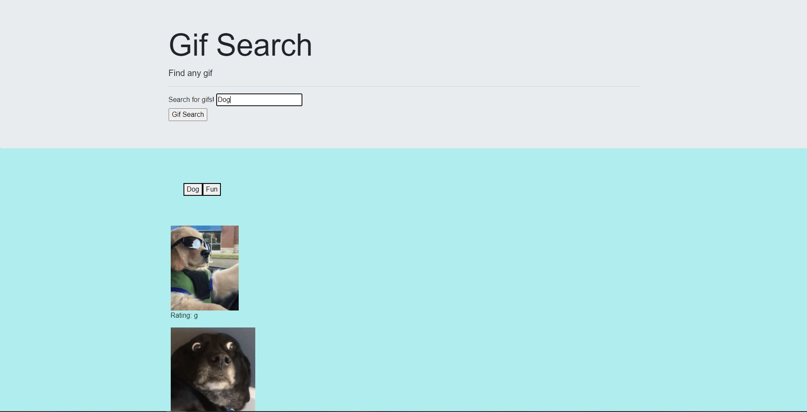

Hello My name is Tyler Nichols. I am a web developer from Utah. I have 3
years of experience in the field with 2 years of it being professional
work experience. I am proficient in HTML, CSS, and JavaScript. My
experience includes libraries such as: React, Gatsby, and Ionic. I am
currently working on my Angular as well in my free time after work. I am
looking to expand my knowledge in the field and working with an amazing
company to have both of us pushing ourselves to our full potential.
Project 1 - New Favorite Game

- A video game database search project
Visit Here
Project 2 - Sample Taxidermy Site

- A site I built for a friend of their Taxidermy work.
Visit Here
Project 3 - Gif Search

-
A small ajax call demonstration of finding any gif you would
like.
Visit Here